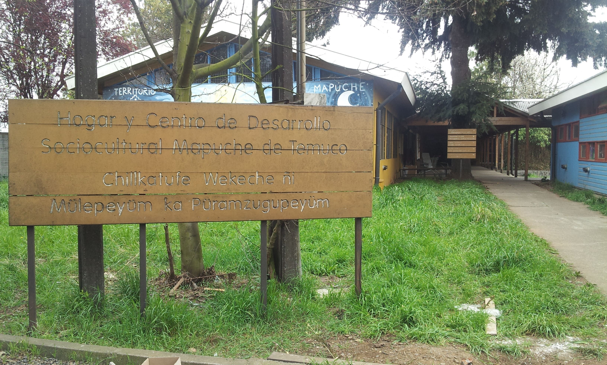

Pelontuwe significa lugar de la visión, ese nombre se acuñó por primera vez en la década del cuarenta del siglo XX por parte de las organizaciones mapuche. La idea que encerraba era la de contar con un subsistema de educación indígena que partiera con escuelas primarias en las comunidades, escuelas granjas, quintas agrícolas y por último con una escuela normal, contando para ello con profesores Mapuche bilingües.
